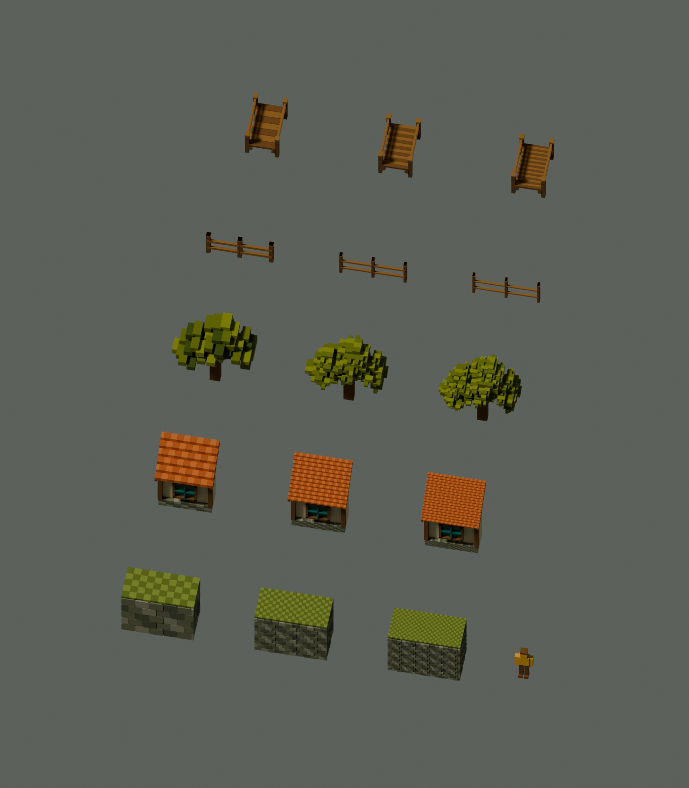

TERRARIUM / FIRST MILESTONE / EXPLORATORY CONTROLS
Construction size, held to the same envelope
Five small specimens, three construction densities, one shared 1.8 m person. Outside dimensions stay equal within each family. The coarse control is source-informed; it is not a copy of the current imported model. Dimensions and final detail settings remain open for review.
| Coarse control | Half-size features | Roughly third-size features |
|---|
Roof rise close-up
Six, twelve and eighteen physical rises across the same roof slope. These are different constructions, not smaller faces on the same six steps.
Complete Blender specimen layout
